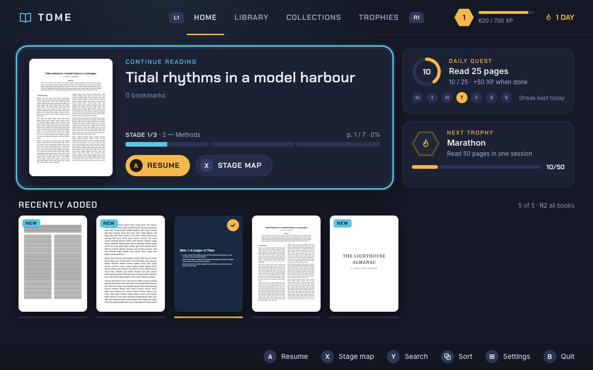
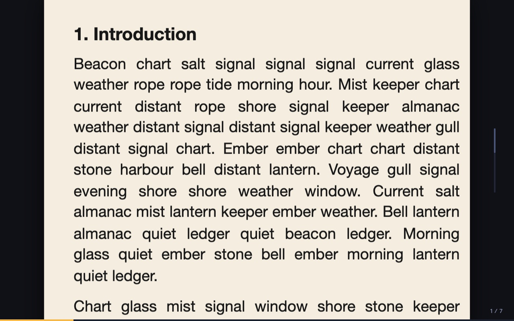
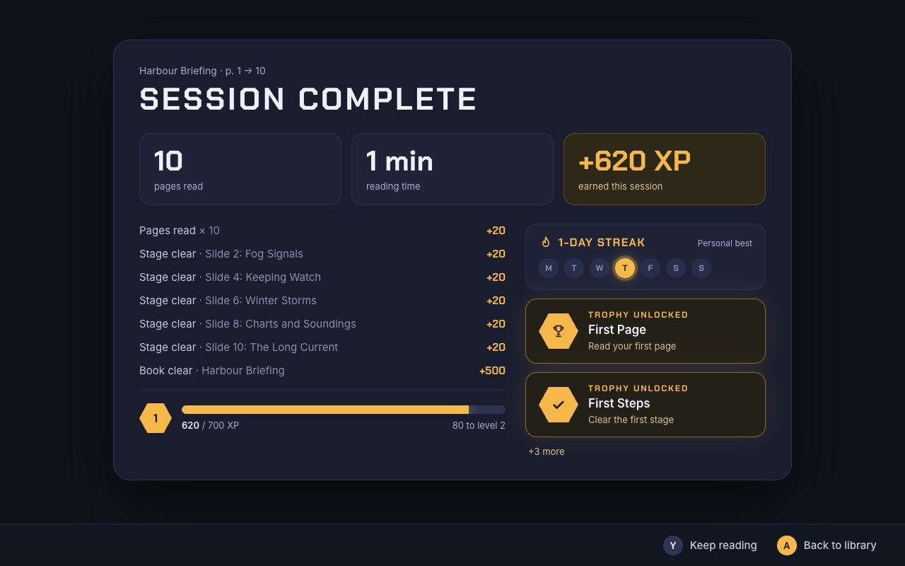
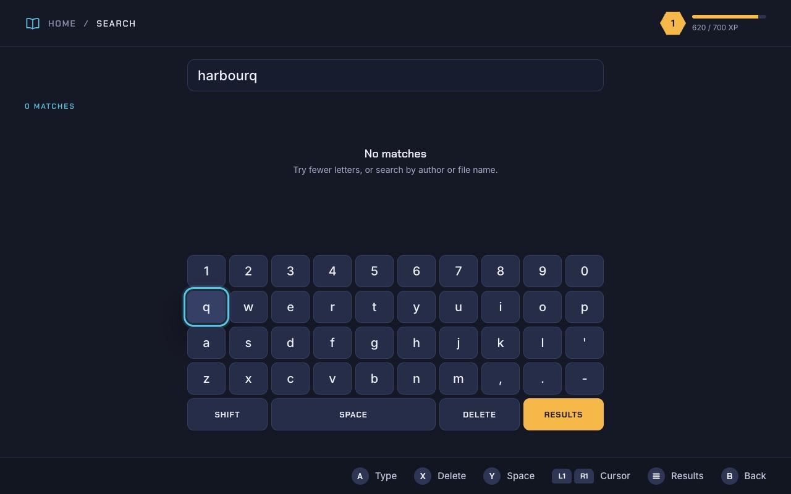
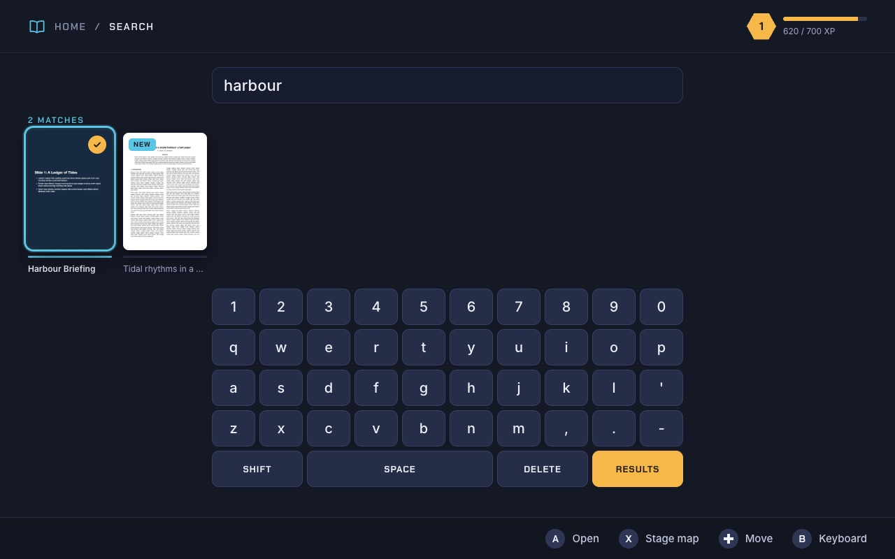

Read PDFs in Game Mode, with a controller.
Books and papers, page by page or column by column. Stages, XP and streaks keep you going, and never get in the way of reading.

Install
Do this once in Desktop Mode (Steam button → Power → Switch to Desktop). After that, Tome starts from your Steam library in Game Mode, and updates itself there too.
Download and add to Steam
Point and click, in Desktop Mode.
- On the Deck, open this page and press Download for Steam Deck.
- Open Dolphin (the file manager) and go to Downloads. Move Tome-x86_64.AppImage somewhere it can stay, such as a new Applications folder in your home folder.
- Right-click the file → Properties → Permissions, tick Is executable, then OK.
- Right-click it again and choose Add to Steam. No such entry? Open Steam → Games → Add a Non-Steam Game → Browse, set the filter to All Files and pick the file.
- Switch back to Game Mode. Tome is under Library → Non-Steam. From v0.9.0, it adds its own library artwork the first time it starts, and the art shows after Steam's next restart.
Updates come to you: from v0.7.0, Tome shows Update available when there's a new version, and Menu → Settings → Software update installs it without leaving Game Mode. Your library and progress stay.
Paste into Konsole
Open Konsole from the app menu (System → Konsole), paste with Ctrl+Shift+V, press Enter.
curl -sL https://zgn-bhr.github.io/tome/install | bash
- Downloads the latest version to ~/Applications/Tome.AppImage.
- Adds Tome to the Desktop Mode menu and, the first time, to Steam, with its icon and library artwork (from v0.9.0).
- Later versions install from inside Tome (Settings → Software update); running the command again also updates.
Remove Tome with curl -sL https://zgn-bhr.github.io/tome/install | bash -s -- --uninstall. It's a short script you can read first.
Then bind the back grips (L4/L5/R4/R5) and trackpads in Tome's Steam controller settings: see the Steam Input guide. Trouble starting? See troubleshooting.
What it looks like
Screenshots at the Deck's 1280×800, with generated test PDFs.




Built for controllers
D-pad, sticks, triggers to zoom, back grips to turn pages. Touch still works.
Papers done right
Margins cropped, two-column pages read column by column, scans included.
A light game layer
Stages from chapters, XP for pages you really read, streaks and trophies.
Yours, offline
Reads PDFs from your folders and SD card. No account, no tracking. Once a day it asks GitHub if there's a new version; you can turn that off.